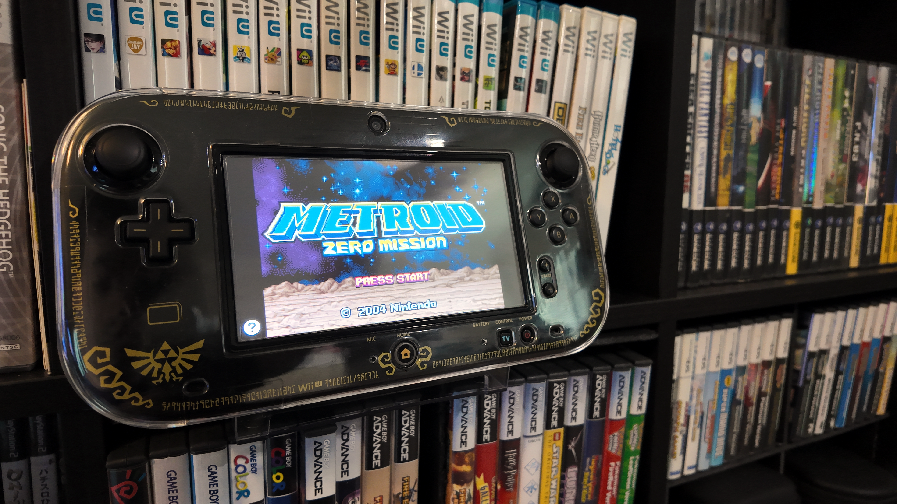

1game1week - Week 11 (4/2/26) - Metroid: Zero Mission
Hey all! It's Week 11! Well, it was, back on the 19th! For real life lore, I'm writing this right after posting the Resident Evil requiem post, so I'm trying my best to catch up here. Back when this post was "supposed to be" up, I was actually off on vacation, attending a wedding. I was a part of the wedding party (big honor). The wedding itself was actually the 21st. I flew in a lot earlier to help and attend a few close friend events. I know the groom reads these sometimes, so congratulations again and thanks for providing the venue with Asahi beer at my request. I also met up with a few online friends there. It was refreshing to see everyone's faces. One friend of mine and I actually hit up a really cool arcade, Game Galaxy. Of course, I took my Ciel plushie, so I'll upload pictures at some point in my life. Anyways!New games from 3/12 -> 3/18: - FATAL FRAME II: Crimson Butterfly REMAKE (PS5) - Maid Cafe on Electric Street (Switch)
As of 3/19, my yearly backlog was at -14 (lower is better, -+0 since last week). And onto 1g1w. A game is considered "beaten" if I've accomplished the main objective of the game, regardless of how many routes / endings I've achieved. However, it's preferable to get all endings if possible! GAME(S): Metroid: Zero Mission PLATFORM: Wii U (GBA VirtualConsole) GENRE: 2D Action Platformer (it feels stupid calling Metroid a Metroidvania) STARTED ON: 3/3 BEATEN ON: 3/4 TOTAL PLAYTIME: 7h46m IRL / 3h40m IGT (Tracked via Wii U Activity Log / In Game Time) I think the first thing I'm obligated to say in this post in particular is shout outs specifically to my friend Juan for influencing me to play this game by talking a lot about it. Hi Juan. Despite owning quite a few Metroid games... just as Metroid Prime last year was my first 3D Metroid, this is my first 2D Metroid. It kind of rocks actually. Zero Mission is a remake of the original game for GBA. I picked it up around the time the Wii U online store was shuttering due to its decently high price for a legitimate physical copy. Man... sorry, I know it's off topic, but it's real nice that we were able to buy VirtualConsole titles back in the day instead of having the subscription model. Was a real nice way to have at least a bit of ownership and tell scalpers to suck it. Still, physical copies are nicer... in fact, I've been debating a little bit as to whether or not I should extract the GBA ROM from my VirtualConsole copy (on this Wii U) and use it with my Analogue Pocket, just for the sake of connecting to Metroid Prime on GameCube with the GBA <-> GC Link Cable. Same thing with Fusion, actually, just with the 3DS instead. Sorry, off topic! To be completely honest, there's not too much I can necessarily say about the game. Both due to its runtime and due to its mostly-simple gameplay mechanics. I do have to say, I was very very enthralled with puzzle design. It's incredible to have taken a 2D platformer like this and introduce well thought out, rewarding puzzles that incorporate the map layout as well as they do. Also, while the navigation system was a lot better than in Prime (felt less handhold-ey), this game excelled in giving you plenty of room to explore while appropriately showing you your boundaries. There were a few map sections here and there that I would think were still probably accessible, so I'd spend a few minutes trying to get around like a moron until I gave up and tried some other way. With all games like these, there's definitely a "optimal path", but exploring without really knowing where to go or what's going on felt interesting. This way, progression all just felt natural. The bosses were really fun to tackle. Some of them were a little underwhelming, but I suppose it's to be halfway expected. Both Ridley fights, for example, made me feel this way. I mean, come on. You give the guy like two cutscenes hyping him up as I go into Norfair, then... he just dies to a few missiles while he flies above me, preparing an attack? When I beat him, I audibly said, despite there being no one but my dog to hear, "...that's all?" and frowned a little. With Meta Ridley it was much of the same story, but it's possibly a little easier to explain here due to the sheer amount of resources you have. I actually found the two grey Space Pirates at the end of the escape sequence a hell of a lot more challenging than Meta Ridley, lol. I enjoyed this game a lot. After playing Metroid Prime, I was a little 'eh' about it. I knew going into Prime 2 it'd be a lot more of the same gripes I had with that game. Given Zero Mission is a lot more no-frills, it stuck well as a nice short fun experience I'd love to get more of. So we shall see if I get around to playing Super Metroid later. Actually, recently a few leaks have been going around that 2026 will see a Super Metroid remake (and an OoT remake). Who knows? Maybe it'll be good to keep on my radar. As a final note... it's kinda funny, but playing this game actually did nothing for my backlog. I wasn't aware that beating the game unlocked the original Metroid to be playable. So... while I went -1 in 2026, I went +1 in 2023. It doesn't affect the current year's backlog goals, but it does affect the overall number. It stung a little... but hey, just more games to get into later!

Thanks for reading! If you need to contact me for any reason, please feel free to email me at aru@hoshikawa-aru.com.